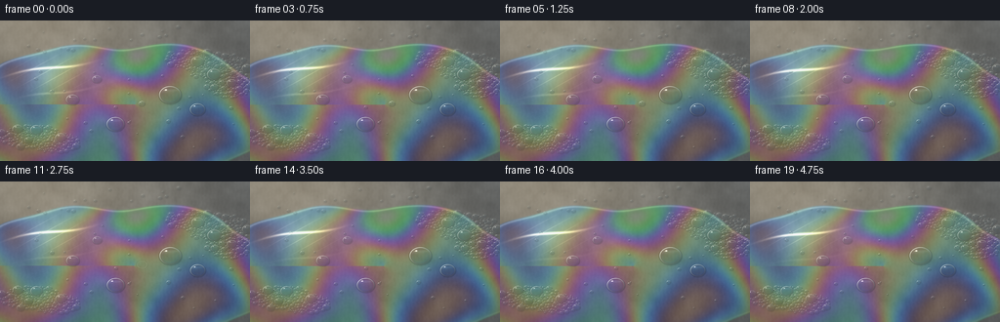
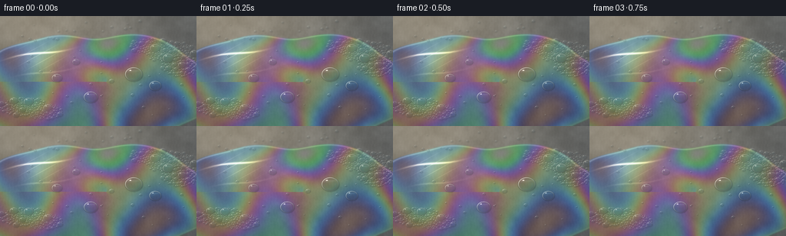

CODING AGENTS AS PIXEL WORLD MODELS
traex/GPT-6.1-Sol · phygen_085
点击播放 · 原生 RGB 像素
逐轮保存的候选
回放视频、检查图与代码变化。
每份候选均可单独播放。实际图片检查记录在下方工具轨迹中。
候选 01播放与检查图
点击播放 · 原生 RGB 像素


展开代码变化
--- 上一保存版本
+++ 本次保存版本
@@ -0,0 +1,275 @@
+"""Procedural macro cinematography of sunlit detergent on a wet stone surface.
+
+No input imagery or external rendering dependencies: all material, geometry,
+thin-film interference, reflections and motion are calculated here.
+"""
+from pathlib import Path
+import json
+import numpy as np
+from PIL import Image, ImageFilter
+import artifact_io
+
+
+ROOT = Path(__file__).resolve().parent
+SPEC = json.loads((ROOT / 'task_spec.json').read_text())
+W, H = SPEC['width'], SPEC['height']
+SS = 3
+SW, SH = W * SS, H * SS
+Y, X = np.mgrid[:SH, :SW].astype(np.float32) / SS
+RNG = np.random.default_rng(85147)
+
+
+def smoothstep(lo, hi, v):
+ a = np.clip((v - lo) / (hi - lo), 0, 1)
+ return a * a * (3 - 2 * a)
+
+
+def noise_grid(w, h):
+ a = RNG.random((h, w), dtype=np.float32)
+ im = Image.fromarray(a, mode='F')
+ return np.asarray(im.resize((SW, SH), Image.Resampling.BICUBIC)) - 0.5
+
+
+# A naturally mottled, finely pitted slate / concrete substrate. All noise is
+# fixed in material coordinates rather than changing from one frame to another.
+stone_noise = (0.055 * noise_grid(11, 8) + 0.033 * noise_grid(39, 22)
+ + 0.017 * noise_grid(131, 74) + 0.012 * noise_grid(355, 201))
+fine_noise = RNG.normal(0, .0028, (SH, SW)).astype(np.float32)
+sunwash = np.exp(-((X - 28) / 165) ** 2 - ((Y + 7) / 112) ** 2)
+grain = .005 * np.sin(X * 1.6 + np.sin(Y * .52))
+stone_value = .39 + stone_noise + fine_noise + grain
+STONE = stone_value[..., None] * np.array([.98, 1.01, 1.02])
+STONE += sunwash[..., None] * np.array([.23, .186, .117])
+
+# Fine surface scratches show through the transparent film, without looking
+# like geometric tiling or an artificial grid.
+for _ in range(21):
+ cx, cy = RNG.uniform(0, W), RNG.uniform(0, H)
+ length = RNG.uniform(3, 21)
+ slope = RNG.uniform(-.35, .35)
+ line = np.exp(-((Y - cy - slope * (X - cx)) / .12) ** 2)
+ line *= np.exp(-((X - cx) / length) ** 6)
+ STONE -= line[..., None] * RNG.uniform(.003, .014)
+
+
+def pool_geometry(t):
+ xx, yy = (X - 122) / 157, (Y - 97) / 74
+ a = np.arctan2(yy, xx)
+ perimeter = 1 + .055 * np.sin(5 * a + .3) + .031 * np.sin(9 * a - .5)
+ perimeter += .009 * np.sin(13 * a + t * .19)
+ d = np.sqrt(xx * xx + yy * yy) - perimeter
+ wet = 1 - smoothstep(-.006, .013, d)
+ return wet, d
+
+
+def interference(thickness, cosine=0.82):
+ # Approximate integration in the three broad spectral response bands. The
+ # neighbouring wavelengths temper unrealistically pure neon colours.
+ out = []
+ for wave in (635., 535., 455.):
+ response = np.zeros_like(thickness)
+ for offset, weight in ((-22., .24), (0., .52), (22., .24)):
+ phase = 4 * np.pi * 1.333 * thickness * cosine / (wave + offset)
+ response += weight * (.5 + .5 * np.cos(phase + np.pi))
+ out.append(response)
+ return np.stack(out, axis=-1)
+
+
+# Foam is made of many packed, individually shaded transparent bubbles, not
+# white dots painted over the surface. Coordinates use a foreshortened plane.
+bubbles = []
+
+
+def add_bubble(x, y, r, kind='soap', strict=True):
+ for bx, by, br, _, _ in bubbles:
+ if (x - bx) ** 2 + ((y - by) / .79) ** 2 < ((r + br) * .99) ** 2:
+ if strict:
+ return False
+ bubbles.append((x, y, r, RNG.uniform(0, 6.28), kind))
+ return True
+
+
+# Several larger bubbles lead the eye into the very thin, rainbow film.
+for x, y, r in [(174, 76, 11.3), (118, 106, 9.1), (202, 91, 7.8),
+ (74, 81, 6.6), (99, 60, 4.7), (145, 85, 3.2),
+ (219, 55, 7.2), (202, 42, 6.7), (37, 112, 6.2),
+ (62, 120, 5.7), (237, 64, 5.1)]:
+ add_bubble(x, y, r)
+
+clusters = [(221, 47, 32, 15), (235, 65, 24, 14), (194, 39, 25, 10),
+ (31, 119, 32, 12), (57, 125, 25, 11)]
+for small, tries in [(False, 2300), (True, 5300)]:
+ for _ in range(tries):
+ cx, cy, rx, ry = clusters[RNG.integers(len(clusters))]
+ x, y = RNG.normal(cx, rx * .60), RNG.normal(cy, ry * .60)
+ if ((x - cx) / rx) ** 2 + ((y - cy) / ry) ** 2 > 1:
+ continue
+ r = RNG.uniform(.48, 1.52) if small else np.clip(RNG.lognormal(.83, .47), 1.2, 6.5)
+ if x < -3 or x > W + 3 or y > H + 3:
+ continue
+ add_bubble(float(x), float(y), float(r))
+
+for _ in range(34):
+ x, y = RNG.uniform(10, 244), RNG.uniform(45, 131)
+ add_bubble(x, y, RNG.uniform(.55, 2.15))
+
+# Clear stray water beads on the partly uncovered, sun-warmed stone.
+for _ in range(18):
+ x, y = RNG.uniform(12, 184), RNG.uniform(6, 33)
+ add_bubble(x, y, RNG.uniform(.60, 2.5), 'water')
+
+
+def film_surface(t):
+ wet, d = pool_geometry(t)
+ image = STONE.copy()
+ # Wetting deepens the underlying stone and suppresses diffuse scattering.
+ image *= 1 - wet[..., None] * np.array([.27, .25, .22])
+ image += wet[..., None] * np.array([.035, .051, .057])
+
+ # Very slow redistribution of a transparent detergent layer: smooth
+ # thickness contours bend around the foam rather than arbitrary TV noise.
+ xf = X + .40 * t
+ yf = Y - .12 * t
+ sw1 = np.sin(xf * .036 + yf * .040 + 1.65 * np.sin(yf * .031))
+ sw2 = np.sin(xf * .017 - yf * .042 + .78 * np.sin(xf * .049))
+ radius = np.sqrt(((xf - 138) * .78) ** 2 + ((yf - 86) * 1.25) ** 2)
+ swirl = np.sin(radius * .050 + np.arctan2(yf - 86, xf - 138) * .75)
+ thickness = 425 + 118 * sw1 + 79 * sw2 + 48 * swirl
+ thickness += 7 * np.sin(.47 * t + xf * .016)
+ tint = interference(thickness)
+ lustre = .18 + .08 * np.sin(xf * .02 + yf * .031) ** 2
+ # Film colours are reflections, never an opaque rainbow painted on stone.
+ image += wet[..., None] * lustre[..., None] * (tint - .30)
+ image += wet[..., None] * np.array([.018, .026, .038])
+
+ # Grazing rays on the wet meniscus, with a fine dark contact line beneath.
+ edge = np.exp(-(d / .009) ** 2)
+ inward = np.exp(-((d + .012) / .012) ** 2)
+ top_lit = .24 + .76 * smoothstep(111, 25, Y)
+ image -= edge[..., None] * .032
+ image += inward[..., None] * top_lit[..., None] * np.array([.20, .188, .15])
+
+ # Warm reflected sunlight is broken into fine moving wavelets. The broad
+ # underlying glow and sharp microfacet reflections have separate scales.
+ light_patch = np.exp(-((X - 51) / 28) ** 2 - ((Y - 53) / 16) ** 2)
+ ripples = np.sin(.24 * Y + .047 * X + .62 * np.sin(X * .057) - t * .28)
+ facets = np.maximum(0, ripples) ** 27
+ second = np.maximum(0, np.sin(X * .32 + Y * .58 + .3 * t)) ** 32
+ reflected = wet * light_patch * (.12 + .75 * facets + .14 * second)
+ image += reflected[..., None] * np.array([1.01, .91, .69])
+
+ # A tiny bubble loses its film halfway through the clip. Its capillary
+ # disturbance expands and fades, with no implausible large splashes.
+ if t >= 2.5:
+ elapsed = t - 2.5
+ rr = np.sqrt((X - 145.3) ** 2 + ((Y - 85.1) / .79) ** 2)
+ disturbance = np.exp(-((rr - (3.2 + 7 * elapsed)) / .48) ** 2)
+ disturbance -= .65 * np.exp(-((rr - (4.0 + 7 * elapsed)) / .5) ** 2)
+ image += disturbance[..., None] * np.exp(-elapsed * 2.2) * .058 * wet[..., None]
+
+ return image
+
+
+def draw_bubble(image, bubble, t):
+ cx, cy, radius, phase, kind = bubble
+ if abs(cx - 145) < .1 and abs(cy - 85) < .1 and t >= 2.5:
+ return
+ # Capillary drift remains extremely small: neighbouring packed bubbles
+ # move cohesively instead of passing through or over one another.
+ flow = .12 * t + .12 * np.sin(t * .49 + cy * .017)
+ cx += flow
+ cy += .09 * np.sin(t * .42 + cx * .008)
+ radius *= 1 + .005 * np.sin(t * .48 + phase)
+ squash = .79
+ margin = 2.1
+ x0, x1 = max(0, int((cx - radius - margin) * SS)), min(SW, int((cx + radius + margin) * SS) + 1)
+ y0, y1 = max(0, int((cy - radius * squash - margin) * SS)), min(SH, int((cy + radius * squash + margin) * SS) + 1)
+ if x1 <= x0 or y1 <= y0:
+ return
+ x, y = X[y0:y1, x0:x1], Y[y0:y1, x0:x1]
+ patch = image[y0:y1, x0:x1]
+ u = (x - cx) / radius
+ v = (y - cy) / (radius * squash)
+ dist = np.sqrt(u * u + v * v)
+ z = np.sqrt(np.maximum(0, 1 - dist * dist))
+ mask = 1 - smoothstep(1 - .18 / radius, 1 + .18 / radius, dist)
+ # Subtle displaced ground-contact shadow and the transparent cap's rim.
+ sd = np.sqrt(((x - cx - .25) / radius) ** 2 + ((y - cy - .50) / (radius * squash)) ** 2)
+ shadow = np.exp(-((sd - 1.01) / (.05 + .18 / radius)) ** 2)
+ patch *= (1 - shadow[..., None] * .16)
+ original = patch.copy()
+ fresnel = .018 + .62 * (1 - z) ** 3
+ orientation = np.clip(.52 - .27 * u - .40 * v, .07, 1)
+ # The surface remains visible through the nearly colourless centre.
+ interior = original * (1 - .08 * mask[..., None])
+ interior += (mask * z)[..., None] * np.array([.012, .023, .030])
+ film = 330 + 76 * v + 30 * np.sin(2.4 * u + phase + t * .14)
+ film_rgb = interference(film, np.maximum(.15, z))
+ if kind == 'water':
+ film_rgb = np.ones_like(film_rgb) * .65
+ sky = np.array([.69, .80, .86])
+ reflection = sky * (.32 + .55 * orientation[..., None])
+ reflection += (film_rgb - .35) * (.37 if kind == 'soap' else 0)
+ interior = interior * (1 - fresnel[..., None]) + reflection * fresnel[..., None]
+ # Two soft environmental reflections inside the spherical soap membrane.
+ band = np.exp(-((v + .49 + .12 * u) / .17) ** 2) * np.exp(-(u / .87) ** 6)
+ interior += band[..., None] * np.array([.040, .046, .044])
+ # A thin illuminated upper-left arc, not a uniform white drawn outline.
+ width = .023 + .105 / radius
+ ring = np.exp(-((dist - .967) / width) ** 2)
+ arc = orientation ** 2.2
+ interior += (ring * arc)[..., None] * np.array([.56, .53, .45])
+ lower_edge = ring * np.clip(.25 + v * .45 + u * .20, 0, .55)
+ interior -= lower_edge[..., None] * .085
+ # Direct specular sunlight on a spherical cap. Larger bubbles reveal a
+ # resolved solar reflection with a fainter second glint on the meniscus.
+ spot = np.exp(-(((u + .38) / (.060 + .09 / radius)) ** 2
+ + ((v + .58) / (.049 + .08 / radius)) ** 2))
+ fringe = np.exp(-(((u + .46) / .14) ** 2 + ((v + .55) / .078) ** 2))
+ interior += spot[..., None] * np.array([1.20, 1.15, 1.01])
+ interior += fringe[..., None] * np.array([.19, .19, .17])
+ patch[:] = original * (1 - mask[..., None]) + interior * mask[..., None]
+
+
+def render_frame(t):
+ image = film_surface(t)
+ # The larger caps cast longer soft shadows, all in the same sun direction.
+ for cx, cy, r, phase, kind in bubbles:
+ if r < 4:
+ continue
+ shadow = np.exp(-((X - cx - r * .20 - t * .12) / (r * .92)) ** 2
+ - ((Y - cy - r * .34) / (r * .46)) ** 2)
+ image *= 1 - shadow[..., None] * .055
+ for bubble in sorted(bubbles, key=lambda b: b[1]):
+ draw_bubble(image, bubble, t)
+
+ # Macro depth of field: the middle film and prominent bubbles are sharp,
+ # whilst the distant rim and the extreme foreground fall off gracefully.
+ clipped = np.clip(image, 0, 1)
+ high = np.maximum(image - .86, 0)
+ bloom_src = Image.fromarray(np.uint8(np.clip(high * 150, 0, 255)))
+ bloom = np.asarray(bloom_src.filter(ImageFilter.GaussianBlur(SS * 1.2)), dtype=np.float32) / 150
+ clipped = np.clip(clipped + bloom * .22, 0, 1)
+ sharp = Image.fromarray(np.uint8(clipped * 255))
+ soft = np.asarray(sharp.filter(ImageFilter.GaussianBlur(SS * .85)), dtype=np.float32) / 255
+ focus = .68 * (1 - np.exp(-((Y - 86) / 52) ** 4))
+ clipped = clipped * (1 - focus[..., None]) + soft * focus[..., None]
+ # Restrained warm optics and a small vignette, no framewise noise flicker.
+ vignette = 1 - .11 * (((X - 131) / 174) ** 2 + ((Y - 78) / 129) ** 2)
+ clipped *= vignette[..., None]
+ final = Image.fromarray(np.uint8(np.clip(clipped, 0, 1) * 255))
+ return np.asarray(final.resize((W, H), Image.Resampling.LANCZOS))
+
+
+def main():
+ frames = []
+ for i in range(SPEC['frames']):
+ frames.append(render_frame(i / SPEC['fps']))
+ print(f'Rendered {i + 1}/{SPEC["frames"]}', flush=True)
+ frames = np.stack(frames).astype(np.uint8)
+ artifact_io.save(frames, ROOT)
+ print('Saved RGB video artifacts:', frames.shape, frames.dtype)
+
+
+if __name__ == '__main__':
+ main()
可观测工具轨迹
实际执行的命令与返回图片。
命令 1exit 0
/bin/bash -lc 'ls -la && cat prompt.txt && cat GENERATION_RULES.md && cat task_spec.json'
命令 2exit 0
/bin/bash -lc 'cat artifact_io.py'
命令 3exit 0
/bin/bash -lc "python - <<'PY' import numpy, PIL print(numpy.__version__) PY"
命令 4exit 0
/bin/bash -lc 'command -v ffmpeg || true'
命令 5exit 0
/bin/bash -lc 'python generate.py'
命令 6exit 0
/bin/bash -lc "python - <<'PY'
from pathlib import Path
import numpy as np
from PIL import Image
p=Path('.')
a=np.load('pixels.npz')['pixels']
f=np.stack([np.asarray(Image.open(p/'frames'/f'{i:02d}.png')) for i in range(20)])
print('Packed tensor:',a.shape,a.dtype)
print('RGB frames:',f.shape,f.dtype)
print('Mean RGB:',f.mean(axis=(0,1,2)).round(2))
print('Mean frame-to-frame change:',np.abs(np.diff(f.astype(float),axis=0)).mean().round(3))
for name in ('generate.py','pixels.npz','index.html','inspection.png','transition_check.png'):
print(name, (p/name).stat().st_size, 'bytes')
assert a.shape==(144,256,20)
assert f.shape==(20,144,256,3)
assert len(list((p/'frames').glob('*.png')))==20
PY"保存候选 1 份；完成命令 6 次；可验证图片返回 0 张。原始 API 响应与完整日志保留在本地。